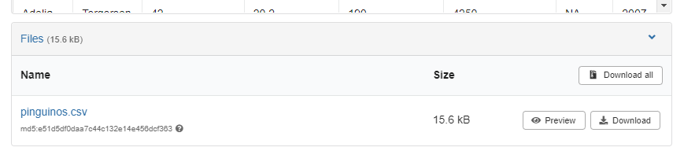

3 Lectura de datos ordenados
3.1 Trabajando con datos
Muchas veces los datos están disponibles en distintos servicios en páginas de internet. Muchos gobiernos por ejemplo, tienen portales de datos abiertos. Organizaciones generan APIs (Interfaz de programación de aplicaciones, Application programming interface en Ingles) para poner a disposición sus datos o tal vez otras personas publicaron sus datos en servicios como Zenodo y queremos aprovecharlos. Es posible que se puedan decargar los datos visitando la web y haciendo click en un botón, sin embargo podríamos escribir el código necesario para hacer esto de manera programática. Esto hace que nuestro trabajo sea más reproducible y disminuye las chances de error.
El código que genera la descarga de datos podría estar incluido en el archivo de análisis de datos si la descarga no demora. En general querremos incluir la opción de no descargar los datos si el código encuentra que ya fueron descargados previamente. También podríamos generar un script de descarga de datos que corra una sola vez. Esta es una buena idea cuando el código de descarga demora o es complejo.
Veamos un ejemplo de descarga de datos desde Zenodo.
Si revisamos la base de datos https://zenodo.org/records/12772944 veremos que incluye un solo archivo en formato .csv.
Vemos también el botón “Download” para la descarga del archivo. Podríamos usarlo para descargar el archivo haciendo click.
Pero como mencionaba previamente, se puede escribir el código necesario para hacer la descarga de manera programática y asegurarnos que tenemos los datos correctos y actualizados.
Para eso, primero necesitás la dirección (URL) del set de datos. Eso se consigue yendo a la página del set de datos y en vez de hacer click en Download, haciendo
Click derecho → Copiar dirección del enlace
La URL de esta base de datos es https://zenodo.org/records/12772944/files/pinguinos.csv?download=1. Guardamos eso en una variable en R
pinguinos_url <- "https://zenodo.org/records/12772944/files/pinguinos.csv?download=1"Y también definimos la ruta donde descargar el archivo
pinguinos_archivo <- "datos/pinguinos.csv" # esta ubicación, o sea la carpeta datos debe existir!Y finalmente usamos la función download.file() para descargar el archivo.
download.file(url = pinguinos_url, destfile = pinguinos_archivo) Y esto va a descargar la última versión de los datos.
3.2 Leer datos csv
Existen muchas funciones distintas para leer datos dependiendo del formato en el que están guardados. Para datos tabulares (filas y columnas), la forma más útil es el formato csv, que es un archivo de texto plano con datos separados por coma.
En R hay muchas maneras de hacer cada cosa, por ejemplo podríamos leer el archivo con la función read.csv(), con read_csv() del paquete readr o fread() del paquete data.table entre otras opciones. Nos vamos a quedar con la opción que nos da readr que tiene algunas características interesantes.
Rows: 344 Columns: 8
── Column specification ────────────────────────────────────────────────────────
Delimiter: ","
chr (3): especie, isla, sexo
dbl (5): largo_pico_mm, alto_pico_mm, largo_aleta_mm, masa_corporal_g, anio
ℹ Use `spec()` to retrieve the full column specification for this data.
ℹ Specify the column types or set `show_col_types = FALSE` to quiet this message.Notá que en este caso el código para leer los datos consta de dos líneas. La primera carga el paquete readr y el segundo usa la función read_csv() (del paquete readr) para leer el archivo .csv. No es necesario cargar el paquete cada vez que vas a leer un archivo, pero asegurate de incluir la carga de paquetes al comienzo de tu codigo.
Todo ese texto naranja/rojo es intimidante pero no te preocupes, es sólo un mensaje que nos informa que los datos se leyeron y qué tipo de dato tiene cada columna. Podemos explorar la estructura de la variable pinguinos usando la función str() (de structure en inglés).
str(pinguinos)spc_tbl_ [344 × 8] (S3: spec_tbl_df/tbl_df/tbl/data.frame)
$ especie : chr [1:344] "Adelia" "Adelia" "Adelia" "Adelia" ...
$ isla : chr [1:344] "Torgersen" "Torgersen" "Torgersen" "Torgersen" ...
$ largo_pico_mm : num [1:344] 39.1 39.5 40.3 NA 36.7 39.3 38.9 39.2 34.1 42 ...
$ alto_pico_mm : num [1:344] 18.7 17.4 18 NA 19.3 20.6 17.8 19.6 18.1 20.2 ...
$ largo_aleta_mm : num [1:344] 181 186 195 NA 193 190 181 195 193 190 ...
$ masa_corporal_g: num [1:344] 3750 3800 3250 NA 3450 ...
$ sexo : chr [1:344] "macho" "hembra" "hembra" NA ...
$ anio : num [1:344] 2007 2007 2007 2007 2007 ...
- attr(*, "spec")=
.. cols(
.. especie = col_character(),
.. isla = col_character(),
.. largo_pico_mm = col_double(),
.. alto_pico_mm = col_double(),
.. largo_aleta_mm = col_double(),
.. masa_corporal_g = col_double(),
.. sexo = col_character(),
.. anio = col_double()
.. )
- attr(*, "problems")=<externalptr> Esto nos dice un montón. La primera línea dice que es una tibble, que es un caso especial de la estructura de datos tabular básica de R llamada data.frame. Tiene 344 filas (las observaciones) y 8 columnas (o variables que describen las observaciones). Las siguientes líneas nos dicen los nombres de las columnas (especie, isla, largo_pico_mm, alto_pico_mm, largo_aleta_mm, masa_corporal_g, sexo, y anio), su tipo de dato (chr o num), la longitud ([1:344]) y sus primeros elementos.
Sumar ejercicio de lectura de los datos con los que vamos a trabajar. Familiarzarse con los datos
Para poder construir y probar nuestro paquete, necesitamos tener los datos con los que vamos a trabajar.
Utilizaremos los siguientes textos del Proyecto Gutenberg:
Originales en catellano:
- Platero y yo: https://www.gutenberg.org/cache/epub/9980/pg9980.txt
- Don Quijote: https://www.gutenberg.org/cache/epub/2000/pg2000.txt
- Fuente Ovejuna: https://www.gutenberg.org/cache/epub/60198/pg60198.txt
- Cuentos de amor de locura y de muerte: https://www.gutenberg.org/cache/epub/13507/pg13507.txt
Traducciones:
- La isla del tesoro: https://www.gutenberg.org/cache/epub/45438/pg45438.txt
- El caso extraño del Doctor Jekyll: https://www.gutenberg.org/cache/epub/62627/pg62627.txt
Escribe el código necesario para descargar los textos en español en formato .txt y guardalos en la carpeta
datosde tu proyecto. Utiliza las url provistas en los dos listados anteriores. Piensa en nombres adecuados para tus archivos segun lo que vimos en el segundo capitulo.Lee los datos descargados, para eso revisa la ayuda de la funcion
read_lines()como vimos en el primer capitulo.Explora su estructura con la función
str().Explora su estructura especificando el numero de elemento a mostrar. Por ejemplo, si la variable que usaste para leer el texto se llama libro, usa
libro[8:14]. Que informacion nos devuelve ese codigo?